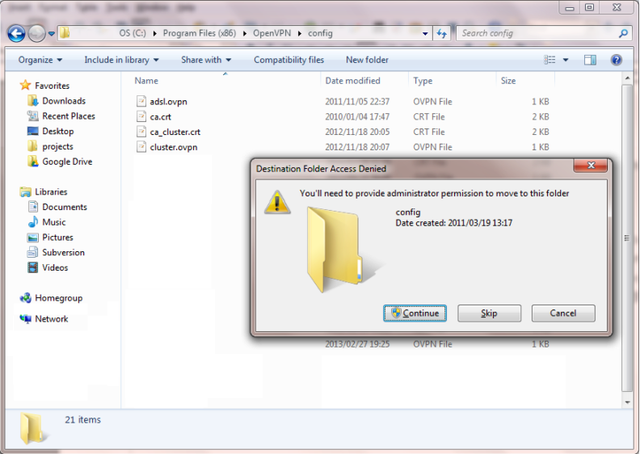
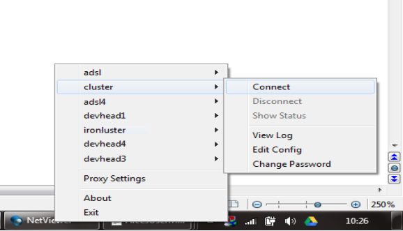
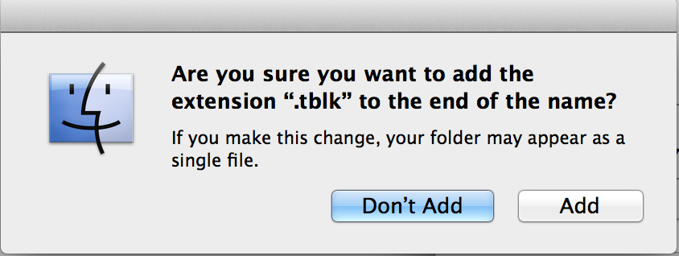

Choose a configuration archive suitable for your platform from those offered below, or browse all available downloads. Refer to the information below for how to configure your VPN client, or refer to the Alces Flight Appliance documentation.
Please note: You will need to
provide the VPN configuration download access
password in order to download these configurations.
Find the download access password by
running alces about vpn at your cluster
command line.
Provides configuration suitable for an OpenVPN client for those familiar with the Tar format. This archive is suitable for users of Linux.
Provides configuration suitable for an OpenVPN client for those more familiar with the ZIP format. This archive is suitable for users of Windows.
Provides configuration suitable for use with the popular open-source OpenVPN client for macOS, Tunnelblick.
Your Alces Flight Compute cluster is configured with a Virtual Private Network (VPN) service to allow you to gain enhanced access to compute resources from your desktop or portable workstations/laptops. A VPN provides your machine with an IP address that is part of the environment's network, allowing direct communication with compute nodes for high-performance graphical application access and data transfer. All communications exchanged over a VPN are automatically encrypted using a certificate unique to your cluster.
The VPN configuration file and encryption certificates are
available above. You can also find a VPN
configuration file and encryption certificates from within your Alces
Flight Compute cluster in the _ROOT_/etc/openvpn/client
directory.
The VPN configuration file includes connection details of the VPN server, including its address and port number, and the certificates used to encrypt communications.
Once downloaded to your workstation, follow the instructions for your platform to configure your OpenVPN software and establish the connection with your Alces Flight Compute cluster.
Additional information can be found in the Alces Flight Appliance documentation.
In order to connect to the VPN you will need to configure a VPN client application. Ask your system administrator if you already have a VPN client available from your organisation or institution — if not, an open-source client for Windows can be downloaded from the OpenVPN project.
After installing the VPN client software, copy the configuration
file and certificates to your system and install them into your VPN
client software. The Windows OpenVPN client requires configuration
files and certificates to be stored in the C:\PROGRAM
FILES\OpenVPN\confdirectory – you may need administrator
privileges to create new files in this directory.

Once the new configuration file has been made available to your VPN client software, launch the VPN application and select the configuration file you created.

macOS contains native support for VPN networks but currently has no support for the OpenVPN protocol used on your Alces Flight Compute cluster. To work around this we recommend the use of the open-source application Tunnelblick.
Once you have installed and launched Tunnelblick, extract the
Tunnelblick ZIP archive you've downloaded. Double-click on
the Alces Clusterware - _CLUSTERNAME_.tblk file to add
the configuration to Tunnelblick and follow the prompts. Once
configured, select the "Connect..." item for the newly added
configuration from the Tunnelblick menu to establish the connection
with your Alces Flight Compute cluster.
Once you have installed and launched Tunnelblick, open the control panel from the Tunnelblick menu by selecting "VPN Details". Add a new VPN and select "I have confguration files" and "OpenVPN Confguration(s)". This will create an empty folder on your desktop.
Inside the folder place the ca.crt.pem
and client.conf files obtained from the cluster, along
with the client.crt.pem and client.key.pem
files if applicable. You can find the files within the
archives available above,
or download them individually.
Rename the folder to use the name with which you wish to refer to
the environment and add the extension .tblk, e.g. My
Cluster.tblk. Again you will be prompted to ask whether you wish
to add the extension — approve the extension change to create an
executable Tunnelblick configuration.

Double-click on the renamed folder to add the configuration to Tunnelblick and follow the prompts. Finally, select the "Connect..." item for the newly added configuration from the Tunnelblick menu to establish the connection with your Alces Flight Compute cluster.
Most Linux distributions have native VPN support, often with a GUI. Unfortunately, much like macOS, many do not include native OpenVPN support.
For Ubuntu users, there is a very comprehensive guide to getting set up with an OpenVPN confguration in the official Ubuntu documentation.
If you're using a different distribution, please refer to the appropriate documentation resource for your distribution, or contact your system administrator for more information.